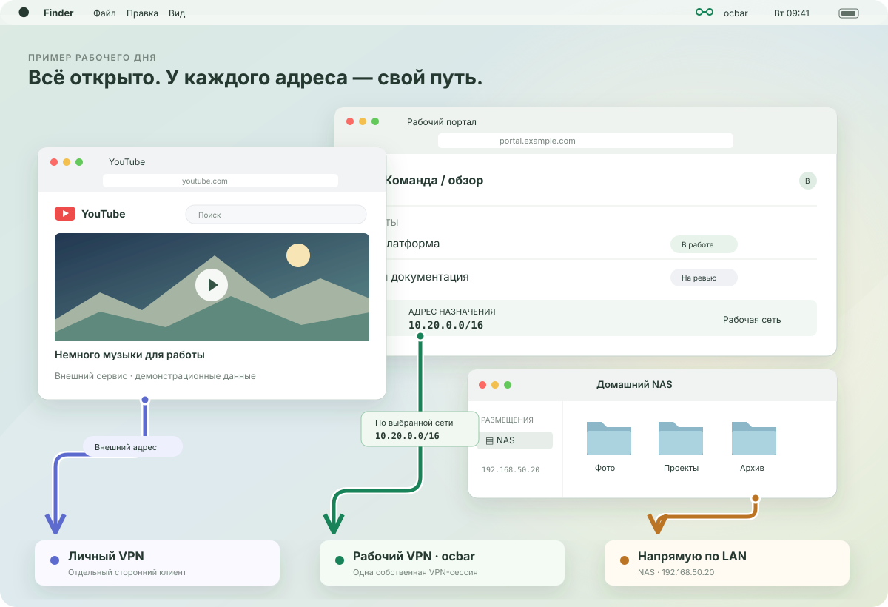
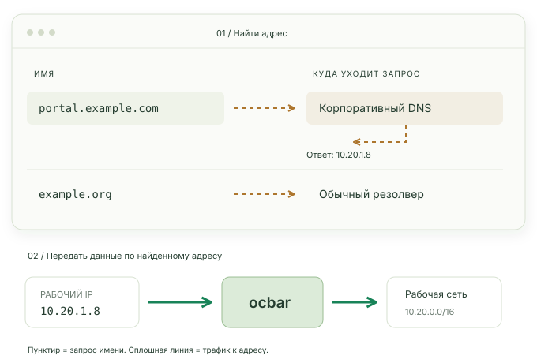

ККоллегаВходит сам
ПРОФИЛЬ ДЛЯ КОМАНДЫ
Передайте настройки.
Вход — у каждого свой.
Файл .ocbar переносит параметры подключения. Коллега импортирует профиль и авторизуется своей учётной записью.
OPENCONNECT / ANYCONNECT · macOS
Работа — через ocbar.
Остальная жизнь — своими путями.
Клиент в строке меню для выбранных сетей, с понятными настройками и открытым кодом.
Установить ocbar
10.20.0.0/16 → ocbar. В рабочий туннель попадают адреса выбранной сети. Это правило назначения, а не привязка браузера к VPN.
Пример предполагает отсутствие конфликтов маршрутов и DNS. ocbar управляет одной своей сессией; личный VPN настраивается в отдельном клиенте.
01 / ГРАНИЦЫ ТУННЕЛЯ
Два возможных режима. Выберите, куда направлять трафик, исходя из настроек шлюза и своих задач.
Туннель для выбранных сетей. В примере ocbar направляет 10.20.0.0/16 в рабочий VPN. Прочие адреса используют действующие маршруты Mac.
Full tunnel и split tunnel — режимы маршрутизации, а не оценка всех клиентов Cisco. Доступ к NAS зависит от конкретных локальных маршрутов и политики подключения.
02 / СНАЧАЛА ИМЯ, ПОТОМ АДРЕС
Split DNS отвечает за поиск адреса. Маршруты решают, как передать данные по этому адресу.

03 / НАСТОЯЩИЕ ОКНА OCBAR
Подключение — в строке меню. Сети, DNS и дополнительные параметры — в настройках профиля.
ПРОФИЛЬ ДЛЯ КОМАНДЫ
Файл .ocbar переносит параметры подключения. Коллега импортирует профиль и авторизуется своей учётной записью.
CSD / HOSTSCAN
Подключите свой CSD wrapper, когда этого требует рабочая инфраструктура. ocbar запускает указанный wrapper; решение о допуске принимает шлюз.
Запуск проверкиРешение о допуске
ЛОКАЛЬНЫЙ SOCKS
С ocproxy и SystemProxy=off приложение может использовать SOCKS без root и без изменения системных маршрутов и DNS. SOCKS нужно настроить в самом приложении.
04 / МОЖНО ПОСМОТРЕТЬ ВНУТРЬ
// видно, что происходит
routes → selected networks
dns → split configuration
logs → connection details
source → MITИллюстрация, не реальный логПроверяйте соединение по логам и смотрите, как устроен клиент. ocbar — открытый проект под лицензией MIT.
Открыть репозиторий ↗macOS · OpenConnect / AnyConnect · MIT